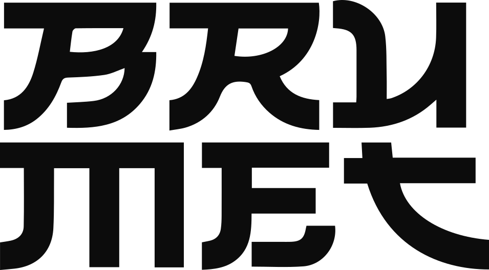
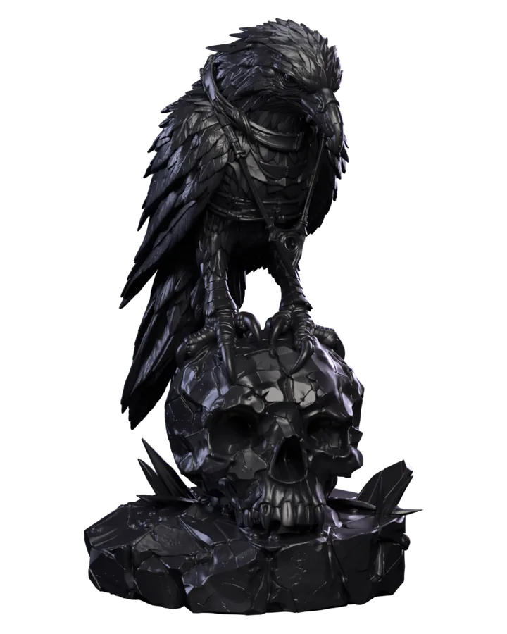

Esculpido, impreso y pintado a mano. Sus ojos se encienden con el color y el efecto que elijas: con un botón, desde tu celular o con la voz. Funciona sin aplicaciones, sin cuentas y sin nube.
Conecta el cable USB-C a un cargador de celular (5 V). La primera vez, los ojos respiran en azul: el cuervo está listo para conectarse a tu WiFi.
¿Sin WiFi? También funciona: usa el botón de la base (página 2).
Cuervo- .
Contraseña: wled1234. Los ojos quedan azul fijo.4.3.2.1.Importante: el cuervo usa redes de 2,4 GHz. Si tu router tiene dos redes (por ejemplo “Casa” y “Casa-5G”), elige la que no dice 5G.
| Azul respirando | Esperando que lo conectes a tu WiFi. | |
| Azul fijo | Tu celular está conectado a la red del cuervo. | |
| Destellos blancos | Se está conectando a tu WiFi. | |
| 3 parpadeos rojos | No pudo conectarse. Revisa el nombre y la clave, e inténtalo de nuevo. | |
| 3 parpadeos verdes | ¡Conectado! A partir de aquí, tus colores. | |
| Ámbar | Su mirada de siempre. Así enciende cada vez. |
Con tu celular en tu WiFi de siempre, abre el navegador y entra a:
http://cuervo- .local
Escenas: Ámbar, Vela, Sangre y Espectro, o guarda las tuyas.
Color con la rueda, brillo, efectos (vela, fuego, latido…) y
temporizador para que se apague solo.
En el navegador, toca Compartir → Agregar a pantalla de inicio. Quedará como una app, con el logo de Brumet.
iPhone con Chrome: si la página no abre, ve a Ajustes → Chrome y activa Red local. En Safari no hace falta.
Cuervo-… para conectarlo a otro WiFi (paso 2).| Los ojos no encienden | Revisa el cable y prueba otro cargador de celular. |
| No aparece la red Cuervo | Desconéctalo, espera 5 segundos y vuelve a conectarlo. Aparece a los pocos segundos. |
| 3 parpadeos rojos | La clave o el nombre de la red no coinciden. Recuerda: red de 2,4 GHz. |
| Cambiaste de router | Mantén el botón principal 5 segundos y repite el paso 2. |
| La página no abre | Tu celular debe estar en la misma WiFi que el cuervo. |
Es una pieza para interiores. No la mojes ni la expongas al sol directo. Límpiala con un pincel suave y seco: la pintura es a mano. No tapes la base: por ahí respira la electrónica.